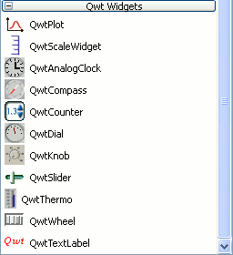

Полноценная среда разработки GUI должна иметь в своем составе средства графического представления информации с развитым интерфейсом пользователя. В Delphi и C++Builder эту роль выполняет компонент TChart. Дополнением к библиотеке Qt, предоставляющим возможность отображать данные в графическом виде, является библиотека Qwt. Рассмотрим процесс ее установки.
Windows
Для сборки библиотеки Qwt потребуется MSYS с дополнительной утилитой patch, он устанавливается вместе с MinGW 4.6 (см. здесь). Кроме того, следует определиться с какими инструментами (подробности в статье) будет использоваться устанавливаемая библиотека, именно с этой связкой ее необходимо и собирать. Здесь возможны два варианта
– Qt 4 и MinGW 4.6
– Qt 5 и MinGW 4.7
Поскольку библиотека Qwt не использует OpenGL, совершенно не важно с какой опцией сконфигурирована Qt 5 -opengl es2 -angle или -opengl desktop. Для разнообразия далее будем полагать, что используется SDK, установленный в папку по умолчанию C:\Qt\Qt5.0.1, в котором, как известно, Qt 5 сконфигурирована с опцией -opengl es2 -angle, а MinGW 4.7 установлен вместе с библиотекой в папку C:\Qt\Qt5.0.1\Tools\MinGW.
Заранее договоримся, что непосредственно файлы библиотеки Qwt будут собираться в обеих конфигурациях – релизной и отладочной, плагин для дизайнера форм – в релизной конфигурации (плагин, собранный в отладочной конфигурации, дизайнер не воспринимает). Примеры использования виджетов, поставляемые с библиотекой Qwt, будут собираться только с Qt 4 (в качестве демонстрации – в отладочной конфигурации), а с Qt 5 для сокращения количества правок исходного кода – не будут.
Разработчиком распространяется две ветки библиотеки Qwt – 5.x.x и 6.x.x. Первая, на мой взгряд, меньше тормозит, а вторая в целом работает корректнее, в особенности это проявляется при использовании Qt 5. Но "на вкус и цвет", как говорится, ... Установка этих версий мало чем отличается друг от друга, но во избежание лишнего "похудения мозга" инструкции для каждой из них даются отдельно. В Windows могут быть установлены сразу обе ветки библиотеки. Переключение между ними осуществляется путем изменения пути к библиотеке в переменной среды Path и именения описания библиотеки в файле проекта.
Версия 5.x.x
Замечание.
Выполнение пункта 7 гарантирует доступность виджетов библиотеки Qwt только в дизайнере форм, поставляемом с библиотекой Qt (см. группу ярлыков библиотеки Qt в меню Пуск), на панели инструментов должна появиться группа виджетов, изображенная на рисунке

Если же открыть какую-либо форму дизайнером, интегрированным в Qt Creator, то данная группа виджетов на панели инструментов отсутствует. Эта проблема обсуждается на форумах, например, здесь. Причиной называют то, что Qt Creator, поставляемый в инсталяционных файлах, собран с помощью Microsoft Visual C++, и плагины, собранные с помощью MinGW, он не понимает. Все встанет на свои места, если пересобрать Qt Creator из исходников, о том как это сделать читайте в посвященной этому вопросу статье. Дополнительную информацию о настройке плагина Qwt смотрите здесь.
Версия 6.x.x
1. Скачиваем с сайта разработчика архив
qwt-6.0.2.zip
(версия на момент написания статьи)
распаковываем его в какую либо временную папку, например, в D:\TEMP.
2. Скачиваем патч
qwt6_qt4_patch.zip для сборки с Qt 4 или
qwt6_qt5_patch.zip для сборки с Qt 5
распаковываем его в папку D:\TEMP\qwt-6.0.2.
3. Запускаем MinGW Shell (см. группу ярлыков MinGW в меню Пуск или файл C:\Qt\mingw-4.6\msys\1.0\msys.bat) и вводим команды
cd /d/TEMP/qwt-6.0.2
patch -Np1 -i qwt6_qt4.patch для сборки с Qt 4 или
patch -Np1 -i qwt6_qt5.patch для сборки с Qt 5
4. Правим файл D:\TEMP\qwt-6.0.2\qwtconfig.pri
– прописываем свой каталог установки, например
QWT_INSTALL_PREFIX = C:/Qt/qwt-$$QWT_VERSION
– если нет желания собирать примеры с Qt 4, комментируем строку "CONFIG += QwtExamples".
5. Запускаем Qt 4.8.4 Command Prompt (см. группу ярлыков библиотеки Qt в меню Пуск) или Qt 5.0.1 for Desktop (MinGW 4.7). Переходим в каталог, содержащий распакованную библиотеку
cd /D D:\TEMP\qwt-6.0.2
и вводим команды
qmake qwt.pro -r -spec win32-g++
mingw32-make
mingw32-make install
Сборка выполнится быстрей, если применяется распараллеливание компиляции (см. соответствующие статьи здесь или здесь). По окончании сборки и копирования файлов в каталоге C:\Qt должна появиться папка qwt-6.0.2.
6. Прописываем в переменную среды Path путь
C:\Qt\qwt-6.0.2\lib
Windows XP: Мой компьютер > Свойства > Дополнительно > Переменные среды > Path > Изменить
Windows 7: Мой компьютер > Свойства > Дополнительные параметры системы > Переменные среды > Системные переменные > Path > Изменить
7. Для того, чтобы виджеты установленной библиотеки были доступны в дизайнере форм, копируем содержимое папки D:\TEMP\qwt-6.0.2\designer\plugins\designer в папку C:\Qt\qt-4.8.4\plugins\designer или, соответственно, в папку C:\Qt5.0.1\5.0.1\mingw47_32\plugins\designer.
На этом установка завершена.
Замечание.
Выполнение пункта 7 гарантирует доступность виджетов библиотеки Qwt только в дизайнере форм, поставляемом с библиотекой Qt (см. группу ярлыков библиотеки Qt в меню Пуск), на панели инструментов должна появиться группа виджетов, изображенная на рисунке
Если же открыть какую-либо форму дизайнером, интегрированным в Qt Creator, то данная группа виджетов на панели инструментов отсутствует. Эта проблема обсуждается на форумах, например, здесь. Причиной называют то, что Qt Creator, поставляемый в инсталяционных файлах, собран с помощью Microsoft Visual C++, и плагины, собранные с помощью MinGW, он не понимает. Все встанет на свои места, если пересобрать Qt Creator из исходников, о том как это сделать читайте в посвященной этому вопросу статье. Дополнительную информацию о настройке плагина Qwt смотрите здесь.